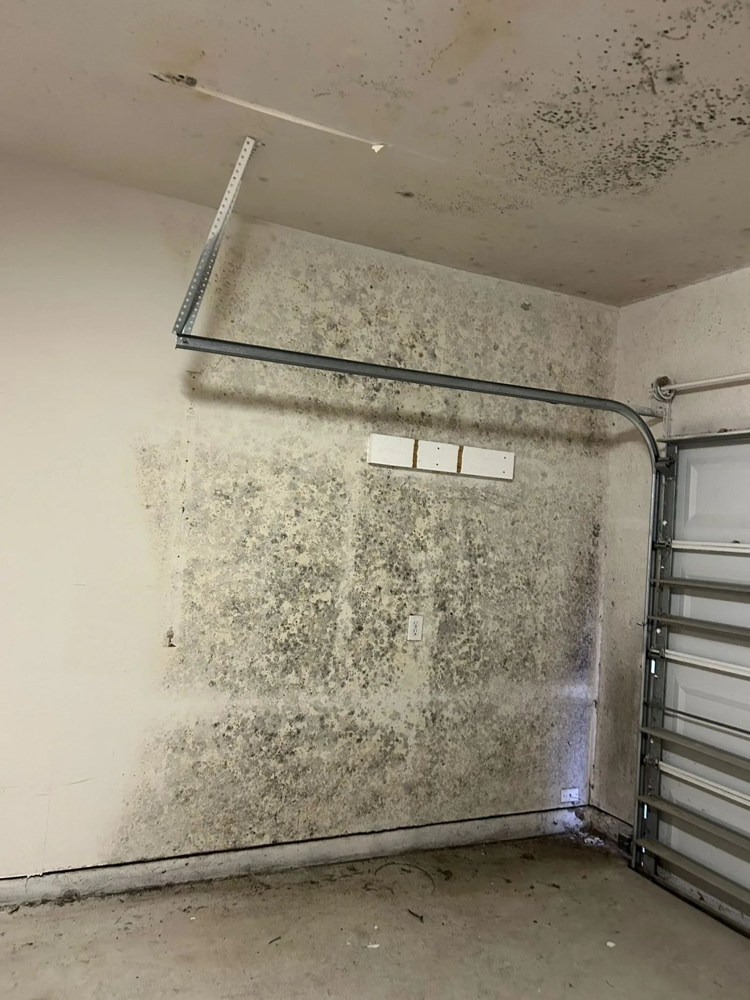

Mold remediation that starts with the water, not the bleach
Remediation means containing the area, removing what’s contaminated, and fixing the moisture that let mold grow in the first place. Here is what a proper job looks like, step by step, so you know what to expect and what to ask.
- Containment & HEPA
- Source moisture fixed
- Clearance before rebuild

The 7 steps of a proper remediation job
Details change from house to house, but a job done to industry practice follows this order. If a contractor wants to skip a step, ask why.
Find the moisture source
Before anything is cut out, the specialist uses moisture meters and often a thermal camera to find where the water is coming from: a weeping supply line, a failed shower pan, condensation in an attic, or groundwater pushing through a foundation. Mold removed without this step usually comes back.
Day 1 · assessmentMap the affected area
Visible growth is usually smaller than the real footprint. Readings around the edges show how far wet material extends into drywall, subfloor or framing, and that sets the size of the work zone.
Day 1 · assessmentBuild containment
Plastic sheeting walls off the work area, often with a zip door. A HEPA air scrubber holds the space under negative pressure so air flows in, keeping spores from drifting into the rest of the house. HVAC registers in the zone get sealed.
Day 1–2 · setupRemove contaminated porous materials
Drywall, insulation, carpet pad and ceiling tile that have grown mold can’t be reliably cleaned, so they’re cut out, bagged inside the containment and carried out sealed. The cut usually extends past the visible edge.
Day 2–3 · removalClean the structure
Framing, joists and sheathing that stay are HEPA-vacuumed and wiped or sanded to remove growth. Sometimes an antimicrobial is applied, but it supports the physical removal and doesn’t replace it.
Day 2–4 · cleaningDry and verify
Dehumidifiers run until wood and remaining materials read in a normal dry range. In the Boise area that’s often quick in summer and slower in a closed-up winter house.
Day 3–5 · dryingClearance, then rebuild
Before the plastic comes down, the area gets a final visual check and moisture readings, and sometimes post-remediation air sampling. Only after it passes should new drywall or flooring go in.
Final · sign-off
Seeing more than a small patch?Anything larger than about ten square feet, or growth that keeps coming back, is worth a professional assessment.
Call (321) 985-3339Why the word “remediation” matters
Mold spores are present in every home, indoors and out. Nobody can make a house “mold-free,” and a contractor who promises to is overselling. Remediation aims to bring mold back to normal background levels and remove the conditions that let it grow.
That’s why the moisture source comes first and clearance comes last. Spraying a wall and painting over it is cosmetic. It may hide the problem for a season, but it won’t fix it.
Smaller, single-room jobs are covered on our mold removal page. If you’re not sure mold is the problem at all, start with testing and inspection.
Before you agree to a remediation estimate
“What’s causing the moisture?”
You should get a specific answer, like “the drain line under the tub” or “condensation from an unvented bath fan,” not just “humidity.”
“How will you contain the area?”
Ask about plastic barriers, negative air and how materials will leave the house.
“How will we know it’s done?”
Ask what clearance looks like: final moisture readings, a visual check, and whether third-party air sampling makes sense in your case.
“What’s excluded?”
Plumbing repairs, rebuild and contents cleaning are often separate. Get it in writing.
Common questions
How long does mold remediation take?
A single contained area, like a bathroom wall or a section of basement, often takes two to five days including drying. Larger areas or jobs with structural drying take longer. Rebuild is usually scheduled after clearance.
Do I need to leave my house?
Usually not, if the work area is properly contained under negative pressure. People with asthma, compromised immune systems or infants may choose to stay elsewhere during removal. Ask the pro for their recommendation.
Can I just use bleach?
On hard, non-porous surfaces like tile, a small spot can be cleaned. On drywall and wood, bleach mostly lightens the stain and adds water, and it doesn’t reach growth inside the material.
Will remediation be covered by insurance?
Coverage usually follows the cause. Mold from a sudden, covered water event is more likely to be included than mold from long-term leaks or humidity. Check your policy and keep the pro’s documentation.